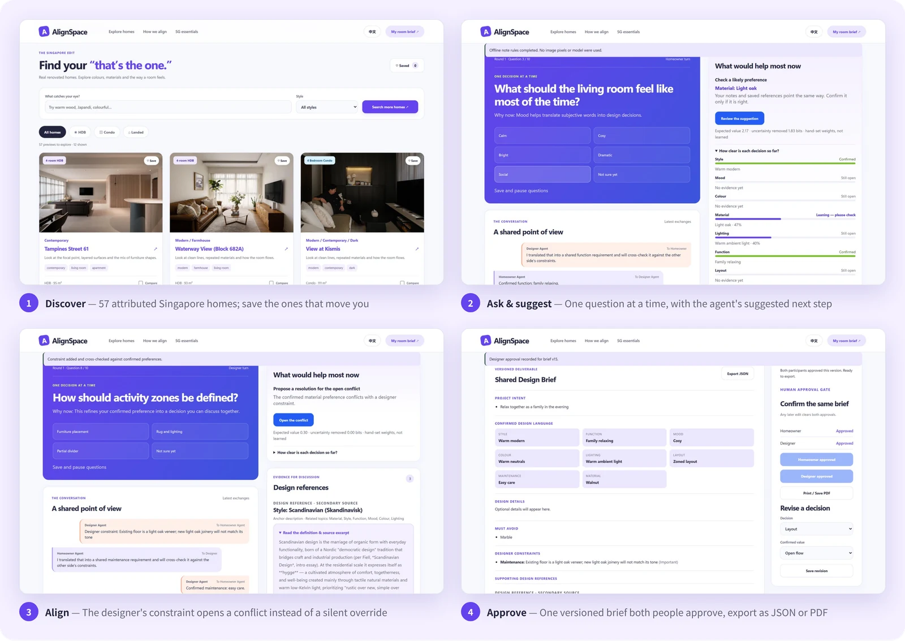

NUS-ISS Show Me Your Agents · Public category · Design Inspiration
AlignSpace
Business Proposal
Turn “I like this” into a living-room brief that the homeowner and the interior designer both sign — before the first concept, not after the third revision.
Design Inspiration — preferences are hard to put into words, designers compile references by hand, and misaligned expectations cause repeated revisions before both sides agree.
Companion: Technical Document (architecture, agents, guardrails, evaluation, AWS deployment evidence). Evidence labels used throughout: Measured observed in our build or live deployment · Source published figure, cited in the references · Assumption a planning input we chose · Hypothesis to be tested in the pilot. We do not claim any time-saving, satisfaction or revenue result yet.
01 Executive summary
Every renovation starts with a conversation about taste. In a small interior-design (ID) firm that conversation is mostly screenshots in a chat, adjectives such as “warm” or “hotel-like”, and a designer decoding them before the first concept. When the two sides read the same picture differently, the gap surfaces later as another revision, a delay or a dispute — usually before a contract is signed and the time can be billed.
AlignSpace is a two-sided agent workspace for that first mile. The homeowner browses real Singapore homes and records notes and must-avoid items; agents turn that evidence into proposals, ask one high-value question at a time, and surface conflicts with the designer’s practical constraints. Nothing counts until a person confirms it, and the brief is released only when both people approve the same version.
787
renovation-contractor complaints to CASE in 2025 — the 4th most-complained industry [1]Source
≈45,600
HDB homes completed (≈19,600) or resold (26,042) in 2025 — each a likely renovation [2][3]Source
S$50–82k
expected 2026 renovation cost of a 4-room HDB flat, new (BTO) to resale [4]Source
US$0.012
model cost of one note analysis, from tokens measured on our live deployment [5][6]Measured
Proven now Measured
Live on the organiser’s AWS Lightsail instance in Singapore, over HTTPS, since 21 September.
19 of 19 two-session browser checks passed against the live site on 26 September — golden path plus adversarial cases such as prompt injection, invitation replay and role spoofing.
77 of 77 automated tests pass; continuous integration on every push.
A real Claude Sonnet 4.5 analysis on the public site turned a homeowner note into five evidence-linked proposals, although the note contained none of the option words.
To prove in the pilot Hypothesis
≥ 80% of required decisions read the same way by homeowner and designer.
Designers review a draft brief in ≤ 10 minutes (median).
≥ 60% of invited homeowners reach a draft brief.
Fewer concept revisions than the firm’s own baseline.
Firms will pay about S$49 per designer per month.
Our ask. One or two Singapore ID firms with 3–20 designers to run a free, six-week pilot on 10–20 consenting living-room projects, measured against their current chat-and-screenshots process.
Homeowners find it hard to communicate design preferences in words and spend time collecting inspiration; designers compile references manually. Misaligned expectations lead to repeated design revisions before both sides agree.
How it plays out in a small firm
Stage
What happens today
What it costs
Lead
The homeowner sends 10–30 screenshots from inspiration sites and social media, plus “we like warm and cosy, not too dark”.
No record of which element of each image matters.
Consultation
The designer interprets on the spot and remembers rather than records.
Interpretation lives in one person’s head.
First concept
“I liked the lighting in that photo, not the walnut.”
A revision round, usually unbilled before contract.
Constraints
Existing floors, pets or low-maintenance needs surface after the homeowner has fallen for a look.
Disappointment, renegotiation, lost trust.
Later
“That is not what we agreed.”
No shared record of what was confirmed, by whom, or when.
Why it persists
An image carries many attributes. “I like this” does not say whether the person likes the oak, the light, the layout or the whole room.
Words mean different things to each side. “Warm”, “minimalist” and “hotel-like” are interpreted differently by a first-time homeowner and a trained designer.
Constraints arrive late, and no tool puts a practical constraint next to the preference it contradicts.
Nothing records agreement. Chat threads and mood-board PDFs do not show what was confirmed, rejected or still open.
Why it matters now
Renovation remains a top consumer-complaint category. CASE received 787 complaints about renovation contractors in 2025 (962 in 2024), the fourth-highest industry [1]. Not every complaint is about expectations, but a jointly approved record of requirements is exactly the documentation that helps both sides when expectations are questioned.
The industry is investing in trust. CaseTrust had accredited 268 renovation businesses by January 2026, with a target of 500 by 2027 [1]. Firms that compete on professionalism and documentation are natural early adopters.
The volume is steady and the stakes are high. HDB completed about 19,600 flats in 2025 and is on track for about 55,000 in 2025–2027 [2]; 26,042 resale applications were recorded in 2025 [3]. A 4-room renovation is expected to cost S$50,000–60,000 for a new flat and S$70,000–81,600 for a resale flat in 2026 [4].
03 Customers and users
Role
Who
Job to be done
What they get
Buyer
Owner or design lead of an ID SME with 3–20 client-facing designers
“Help my team align projects without adding operational risk.”
Consistent intake, fewer unbilled revision loops, an auditable approval trail.
User
Designer (“Arjun”)
“Turn scattered references into a usable brief with fewer clarification loops.”
A structured brief with constraints and open decisions visible before the first concept.
User
Homeowner, often a first-time renovator (“Mei”)
“Help me show what I mean and confirm that my designer understands it.”
Plain-language questions in English or Chinese, and control over every suggestion.
Beachhead. Pre-concept alignment for living rooms in HDB and condominium projects, started by the designer after lead qualification. The living room carries rich preferences (style, colour, material, light, layout, mood, function, maintenance) with fewer safety-critical issues than kitchens and bathrooms.
04 The solution

Figure 1. Discover real Singapore homes; answer one question at a time with a suggested next step; see a designer constraint open a conflict instead of a silent override; approve one versioned brief together. Screens from the running product with synthetic data.Figure 2. The alignment loop. Agents propose and ask; people confirm, resolve and approve; the loop returns to whoever owns the missing decision.
Pain today
AlignSpace response
Evidence
“I like this” is ambiguous
Notes become attribute-level proposals that quote their source; the homeowner confirms or rejects each one.
Measured live call returned 5 proposals, each quoting the note
Words mean different things
One question at a time with plain options and “not sure” always available; the agent picks the question that removes the most uncertainty.
Hypothesis ≥ 80% alignment in the pilot
Constraints arrive late
The designer joins from a private single-use link; a constraint that contradicts a confirmed preference opens a visible conflict and blocks approval.
Measured live checks: conflict opened, approval blocked
Nothing records agreement
A versioned brief; both approve the same content fingerprint from their own sessions; any later edit clears both approvals; JSON and PDF export.
Measured live checks: same fingerprint, edit clears approvals
AI could overreach
Suggestions stay “proposed”; instructions hidden in notes are ignored; no construction, pricing or compliance advice.
Measured live check: injected instruction not executed
What AlignSpace is not: an AI render generator, a quotation or contract tool, or construction, structural, electrical or regulatory advice. It sits upstream of those tools and exports a brief they can use.
05 Market and competition
Demand. About 45,600 HDB households a year start from a newly completed or resale flat (2025: about 19,600 completions [2] plus 26,042 resale applications [3]), before condominiums and landed homes. Supply. CaseTrust-accredited renovation businesses numbered 268 in January 2026, with a target of 500 by 2027 [1], alongside many non-accredited firms. We size the opportunity by firms, because firms pay.
Illustrative scenario Assumption
Paying firms
Designer seats (5 per firm)
Price per seat / month
Annual recurring revenue
Year 1 — design partners convert
10
50
S$49
S$29,400
Year 2 — early adopters
40
200
S$49
S$117,600
Year 3 — referral-led growth
100
500
S$49
S$294,000
Arithmetic on our assumptions, not a forecast. For scale, the Year-3 scenario equals one-fifth of the CaseTrust target of 500 accredited renovation businesses [1]. Expansion beyond the beachhead: other rooms (with added professional review for wet areas), whole-home briefs, and other markets where homeowners and designers work across English and Chinese.
Competitive landscape
Alternative
Good at
Leaves open
AlignSpace position
Chat, screenshots and PDF mood boards (status quo)
Fast, familiar, free
No structure; no record of what was confirmed; constraints arrive late
Replaces the ad-hoc intake; chat stays for conversation
Inspiration platforms such as Pinterest, Houzz and Qanvast
Discovery and a huge supply of images
A saved image is not a stated preference; one-sided
Links out to attributed homes and treats saves as weak evidence only
AI image and render generators
Inspiring visuals quickly
Pictures, not requirements; can set expectations the site or budget cannot meet
Produces agreement on requirements; visuals remain the designer’s craft
Quotation, CRM and project tools for renovation firms
Downstream execution
Assume the brief already exists and is agreed
Upstream of them; exports schema-valid JSON
Defensibility. Not the base model — any capable model can sit behind our adapter. What compounds is the two-party preference and conflict data (with consent), the question policy and its evaluation set, bilingual design vocabulary, and the approval step embedded in a firm’s intake.
06 Business model and unit economics
Pricing Hypothesis
Plan
Price
For
Pilot
Free, 6 weeks
1–2 design partners
Studio
S$49 per designer seat per month
Firms; unlimited homeowners, fair-use analysis cap per project
Per brief
S$15 per dual-approved brief
Freelancers and low volume
Break-even for a firm. At S$49 per seat, the tool pays for itself if it saves a designer about one hour a month, at an assumed loaded cost of S$50 an hour — roughly ten minutes per project at six projects a month Assumption. The pilot measures review time and revision counts against the firm’s own baseline.
Cost to serve
Item
Cost
One note analysis: 1,873 input + 426 output tokens Measured × Claude Sonnet 4.5 list price US$3 / US$15 per million [6]
US$0.012
Model cost per project at 1–5 analyses Assumption; hard cap of 20 per project
Per seat per month: 6 projects × 3 analyses, 50 seats sharing one instance Assumption
≈ US$0.70
On 26 September the live instance used 0.9 of 3.8 GB memory and 6.8 of 77 GB disk Measured. Infrastructure is small relative to price; the real costs are onboarding, support and sales, which the pilot will size.
07 Go-to-market
Phase 0 · Oct–Dec 2026
Design partners
One or two ID SMEs recruited through our own network and the hackathon’s SME community. A free six-week pilot, 45-minute onboarding and a weekly metric and safety review; no CRM integration required.
Phase 1 · H1 2027
Early adopters
Quality-focused and CaseTrust-accredited studios, reached through pilot case studies, designer referrals and bilingual “how to brief your designer” guides for homeowners.
Phase 2 · H2 2027 onward
Scale
JSON export into quotation and CRM tools, partnerships with inspiration platforms, more rooms, and a firm dashboard that tracks alignment across projects.
How a firm adopts it. The designer sends the project link after lead qualification → the homeowner completes the guided brief at home → the designer reviews the summary before the first workshop → the pair resolves open decisions and approves → the brief is exported into the firm’s existing workflow. The homeowner never needs an account, and the firm keeps the relationship.
08 Pilot plan and measurable outcomes
Set-up. Six weeks; one or two SMEs; 10–20 consenting living-room projects; baseline from the firm’s recent comparable projects run the usual way. Synthetic or consented data only; no purchasing, contact or contractual output.
Metric Hypothesis
Definition
Target
How we measure
Brief Alignment Rate
Share of 20 rubric decisions where homeowner and designer independently pick the same interpretation after the session
≥ 80%
Blind rubric at session end
Invitation-to-draft
Invited homeowners who reach a draft brief
≥ 60%
Audit log
Designer review time
Median minutes to review a draft brief
≤ 10 min
Timestamps plus designer log
Actionability
Designers rating the brief at least 4 of 5 as a starting point
≥ 70%
One-question survey
Revisions
Concept revisions before sign-off, compared with baseline
Fewer
Designer-reported per project
Willingness to pay
Designers who would pay S$49 per seat per month
≥ 50%
Exit interview
Safety
P0 privacy or security incidents
0
Incident log
Decision rules. Convert and expand if at least four targets are met with no P0 incident; iterate on the weakest step if two or three are met; stop or pivot if one or none is met, or if a P0 incident is not resolved.
09 Feasibility and scalability
The product already runs end to end on AWS with bounded AI usage, security controls and English/Chinese copy (details and evidence in the Technical Document). The path from pilot to scale changes infrastructure, not the product’s logic:
Concern
Today (pilot)
At scale
Data store
SQLite in WAL mode on one instance; backup before each release switch
Amazon RDS for PostgreSQL with per-firm tenancy and scheduled backups
Images
Private disk storage; images decoded, resized and metadata-stripped
Amazon S3 with signed URLs and lifecycle deletion
Compute
One Lightsail instance (US$24 per month) behind Caddy with HTTPS
Two or more instances or containers behind a load balancer
Model
Organiser Claude Sonnet 4.5 JSON API with per-project and daily caps
Amazon Bedrock under the firm’s account; a regional endpoint if data residency requires it (+10% over global [6])
Identity
Browser-session access with single-use designer invitations
Firm accounts and single sign-on, recovery and admin roles
Vision
Adapter built but disabled: the gateway failed a known-image test
Enabled once a vision endpoint passes the same test
Compliance
Consent before upload, data minimisation, deletion by design
PDPA review, data-protection officer, data-processing agreements with firms
10 Risks and mitigations
Risk
Mitigation
Designers see it as replacing their relationship work
It is the designer’s intake tool: the designer sends the link, owns the constraints and exports the brief into their own workflow.
Homeowners will not do pre-work
At most ten questions per round, pause and resume, “not sure” always allowed, a guided sample; completion is a pilot metric.
The AI misreads a preference
Proposals never auto-confirm, evidence is quoted, rejection is one click, and an explicit offline mode exists.
Liability for construction or safety claims
Out of scope by design; critical constraints require professional review before approval, and the product says so.
Privacy (PDPA)
Consent before upload, private storage, minimisation and deletion; no training on project data without separate consent.
Model cost or provider dependency
A provider adapter (Anthropic, OpenAI and Ollama formats), per-project and daily caps, cooldowns and an offline mode.
Large platforms add similar features
Focus on two-sided agreement data and workflow embedding; complement inspiration platforms rather than compete with them.
11 Social impact
Taste without jargon. People without design vocabulary express preferences by reacting to real homes and answering plain questions, in English or Chinese, including mixed-language notes.
Transparency. Every suggestion shows its evidence, and open decisions stay visible instead of being guessed.
Fewer misunderstandings. A jointly approved, versioned record of requirements supports better conversations when expectations are questioned.
Inclusion. Works in any browser with no app install; a manual path is always available; accessibility targets include WCAG 2.1 AA contrast and keyboard use.
12 Roadmap
When
Milestones
Now · Sep 2026
Living-room product live on AWS; two-sided approval; English and Chinese; bounded Claude Sonnet 4.5 note analysis; 77 tests and 19 live checks.
Next · Q4 2026
Design-partner pilot; paired homeowner–designer trials; calibrate the belief model on pilot data; enable image understanding once a provider passes the known-image test; account recovery and HSTS.
Later · 2027
Whole-home briefs with professional review for wet areas; firm dashboard; integrations with quotation and CRM tools; Malay and Tamil copy.
13 Team and evidence
Four Wolf Kings (8QFDUS2I) — Chen Xiaoming, Xing Yiyuan, Xu Tengyang and Xu Zhaobin — built AlignSpace for the NUS-ISS Show Me Your Agents hackathon (public category).
What we claim
Evidence
A working two-sided product on AWS
Measured Live URL; 10-minute demo video; deployment snapshot and 19/19 live checks on 26 September (Technical Document §08)
Guardrails that hold under adversarial checks
Measured 19 two-session checks and 77 automated tests
Real model integration with bounded cost
Measured Live call record with model, prompt version, tokens and latency (21 September)
Business outcomes
Hypothesis Not yet measured. No user study, time saving or revenue is claimed; the pilot above is designed to measure them.
— References web sources accessed 26 September 2026 and reported as published
CASE media release, 9 February 2026 — renovation contractors: 787 complaints in 2025 (962 in 2024), fourth-highest industry; 268 CaseTrust-accredited renovation businesses in January 2026, target 500 by 2027. case.org.sg
Mothership, 8 January 2026, citing HDB — about 19,600 flats completed in 2025; about 55,000 flats in 2025–2027. mothership.sg
ERA Singapore, 2 January 2026, HDB flash estimates — 26,042 resale applications in 2025 (28,986 in 2024). era.com.sg
AlignSpace live model-call record, 21 September 2026 — 1,873 input and 426 output tokens, one attempt, 7.5 s. gateway-live-check.json
Anthropic pricing — Claude Sonnet 4.5: US$3 per million input and US$15 per million output tokens; regional endpoints 10% above global. platform.claude.com
 Scan to watch the 10-minute demo
Scan to watch the 10-minute demo